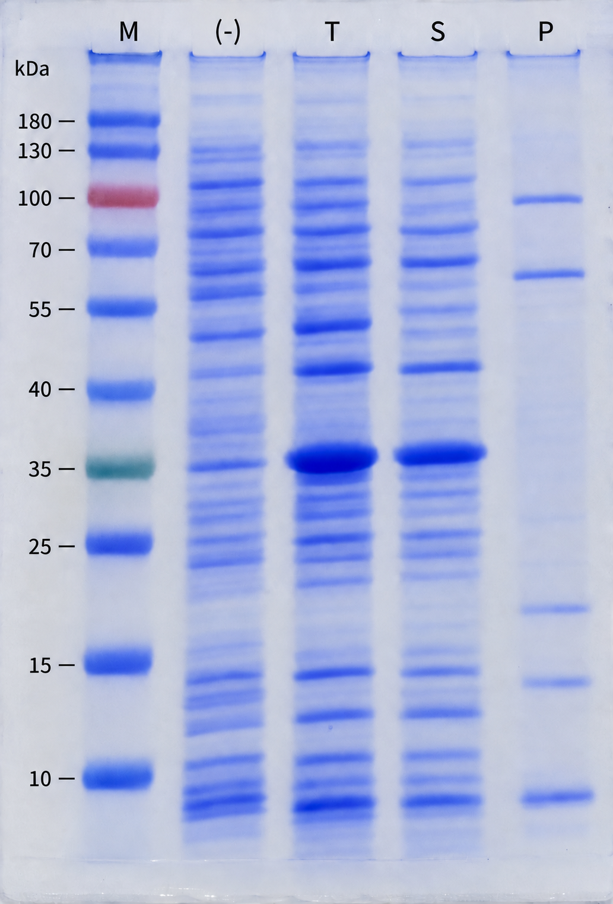
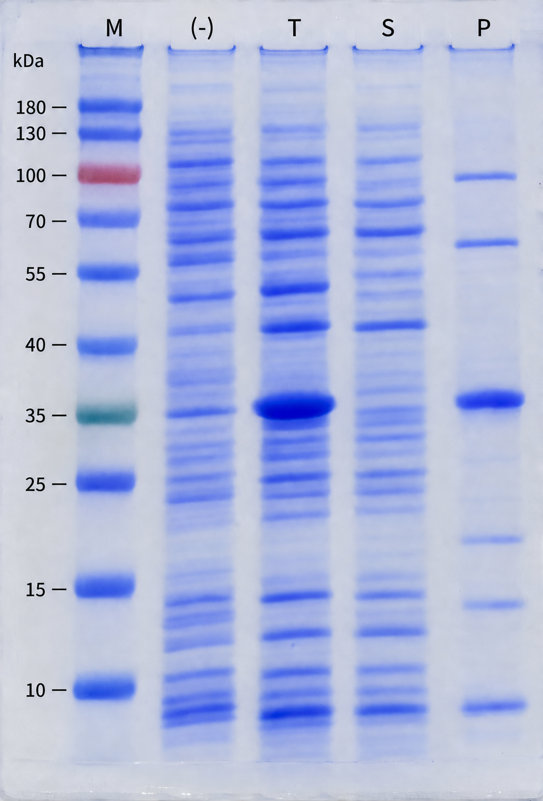
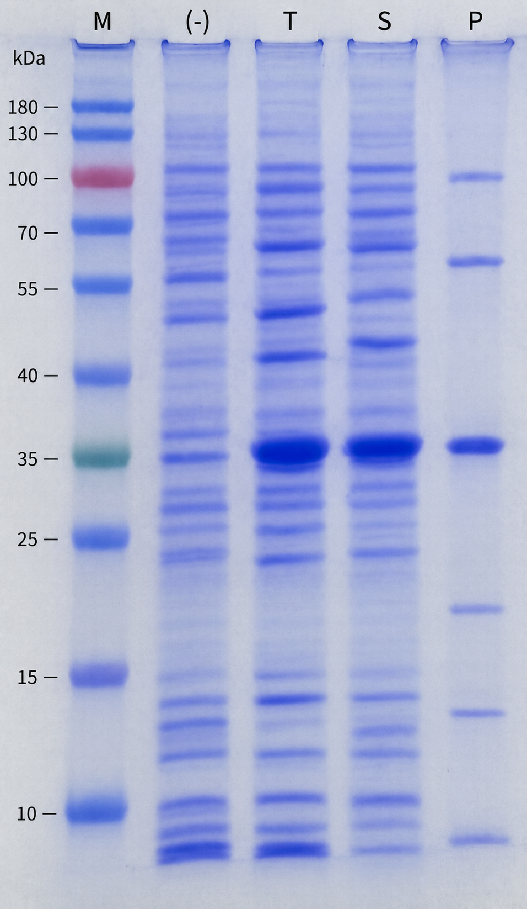
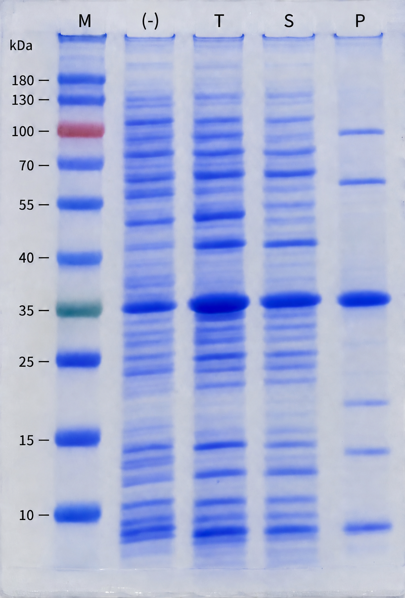
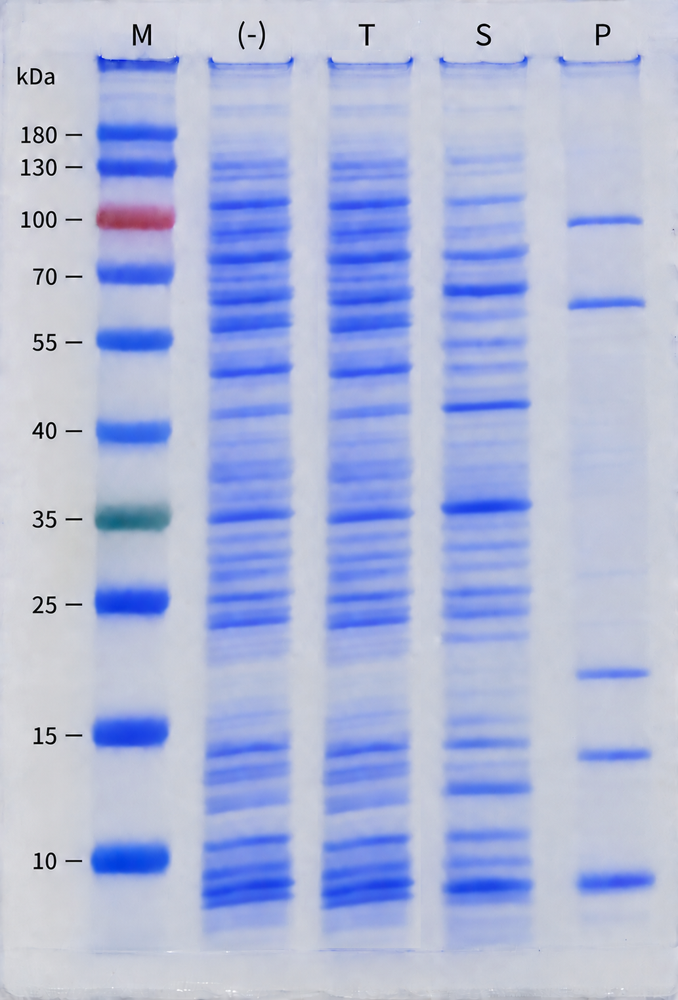

Proteins differ in sequence, structure, and stability, so their expression patterns can vary even under the same conditions. This article summarizes common expression patterns observed by SDS-PAGE and Western blotting, along with key points to check.
[1] The Purpose of Protein Expression Screening
Before proceeding with purification, confirm that the target protein is sufficiently expressed in the selected host strain. The two key factors are expression level and solubility.
The following samples are used for analysis:
- IPTG(−): Uninduced control without IPTG
- T, Total: Total cell lysate
- S, Soluble: Soluble fraction in the supernatant after centrifugation
- P, Pellet: Insoluble fraction in the pellet after centrifugation
[2] Common Expression Patterns
1. Soluble Expression

After IPTG induction, a band at the expected molecular weight increases in intensity and is clearly visible in both T and S. If the band is weak or absent in P, this suggests that a high proportion of the expressed protein is soluble.
This pattern is generally favorable for purification under non-denaturing conditions. However, soluble expression does not guarantee correct folding or biological activity. The identity of the band and the function of the purified protein should still be confirmed.
2. Insoluble Expression

The target band is observed mainly in P. This may indicate inclusion body formation, although other factors, such as incomplete cell lysis, should also be checked.
Proteins in inclusion bodies can be recovered through solubilization and refolding, but the extent to which their native structure and activity can be restored varies from protein to protein. Consider optimizing soluble expression first, or choose a refolding process depending on the intended application.
Although there is a perception that refolding cannot restore a protein to its native structure, commercially available examples demonstrate that it can be successful. Insulin glargine (Abasaglar / Basaglar), used to treat diabetes, and filgrastim (G-CSF; Zarzio / Zarxio), used to prevent and treat neutropenia, are examples of therapeutic proteins produced through insoluble expression in E. coli followed by solubilization and refolding.
3. Mixed Soluble and Insoluble Expression

The target band is observed in both S and P. Even when some of the protein is insoluble, purification can proceed if a sufficient amount is available in S. In this pattern, the protein recovered from the soluble fraction may be somewhat less stable than a protein expressed entirely in soluble form.
[3] Other Expression Patterns and Their Interpretation
1. Basal Expression / Leaky Expression

The target protein is expressed even without IPTG. This can occur when repression of an inducible expression system is incomplete.
Basal expression does not necessarily indicate failure. However, if the target protein imposes a burden on the host or is toxic to it, cell growth and subsequent expression may be affected. Not all heterologous proteins are toxic to the host.
Practical tip: Compare cell growth as well as band patterns between IPTG(−) and IPTG(+) samples. Also confirm that the band in the uninduced sample is actually the target protein.
See also: Major Challenges in Protein Expression
2. Detectable Only by Western Blotting, with No Clear Band on SDS-PAGE

The target protein may be expressed at a low level, or its band may be obscured by host proteins of similar molecular weight. It is therefore more appropriate to describe this as “low expression” or “not clearly distinguishable on SDS-PAGE” rather than “no expression.”
Whether the protein is suitable for the intended application should be determined by the yield and purity obtained after purification, rather than by Western blot signal intensity alone.
3. Multiple Bands Below the Expected Molecular Weight on a Western Blot
This pattern may suggest proteolysis or protein degradation. However, other possible causes include truncated translation products, sequence errors, and nonspecific antibody binding.
Practical tip: Verify the sequence of the expression construct and its open reading frame (ORF), and compare samples collected at different culture time points with samples taken immediately after cell lysis. Even when using a target-specific antibody, lower-molecular-weight bands alone are not sufficient to confirm degradation.
4. Bands at Approximately Two or Three Times the Expected Molecular Weight
This pattern may suggest oligomers, such as dimers or trimers, or incomplete denaturation.
Practical tip: Compare reducing conditions using DTT or β-mercaptoethanol with non-reducing conditions, and evaluate heating conditions separately. For some proteins, excessive heating can promote aggregation. Also, an unheated sample containing SDS is not in its native state.
5. Irregular Bands Both Above and Below the Expected Molecular Weight on a Western Blot
Protein degradation, oligomerization, aggregation, incomplete denaturation, and nonspecific antibody binding may occur together. This pattern alone is insufficient to conclude that the protein is difficult to express or that abnormal translation has occurred.
Practical tip: Compare uninduced and IPTG-induced samples, and compare Western blot detection patterns using antibodies against the target protein and its tag.
[4] When Changes to Expression Conditions Do Not Help
If adjusting culture temperature, IPTG concentration, induction timing, and induction duration produces little improvement, consider reviewing the expression design. This includes the expression vector, host strain, fusion tag, codon usage, and N-terminal sequence. Even small sequence changes can substantially alter expression patterns.
When evaluating protein expression, consider changes before and after induction, the distribution between S and P, and agreement with the expected molecular weight, rather than focusing on a single band. No single solution works for every protein, so record the observed patterns and narrow down the possible causes one at a time.